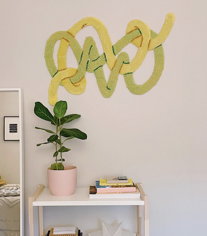
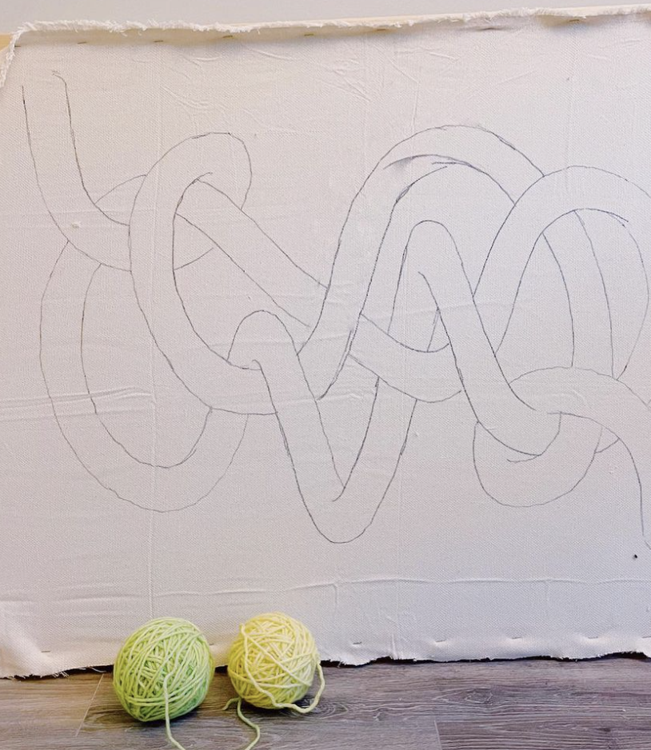
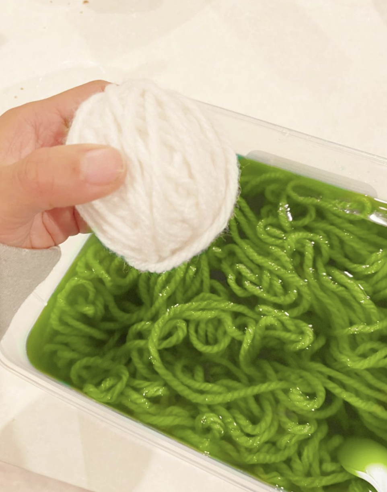
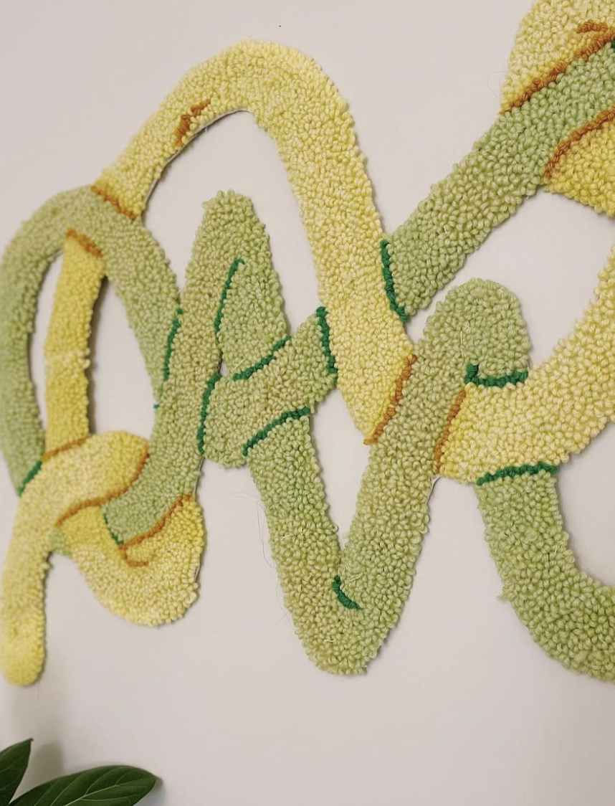

Worms!
I had initially called this "Scribble" because the design came from a scribble I doodled while watching TV, but I have been told this gives off strong worm vibes, so here we are! This project included an exploration into yarn dyeing -- I started with white wool yarn and created the colors with acid dyes. Lots of fun!



